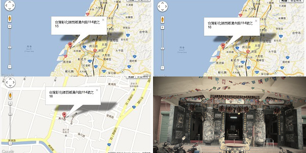
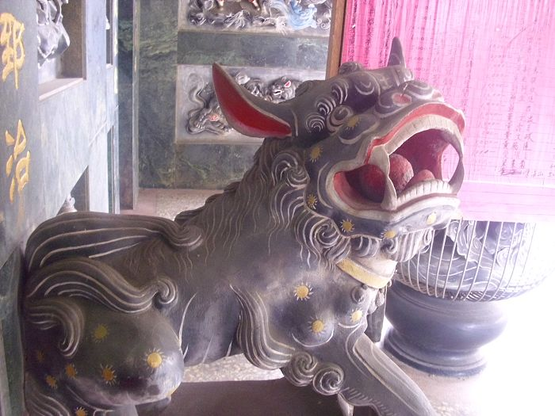
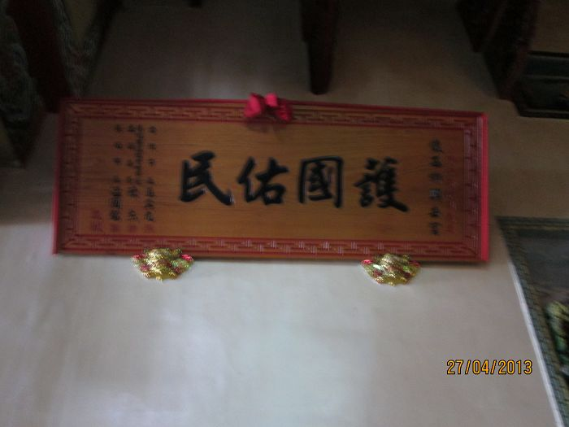
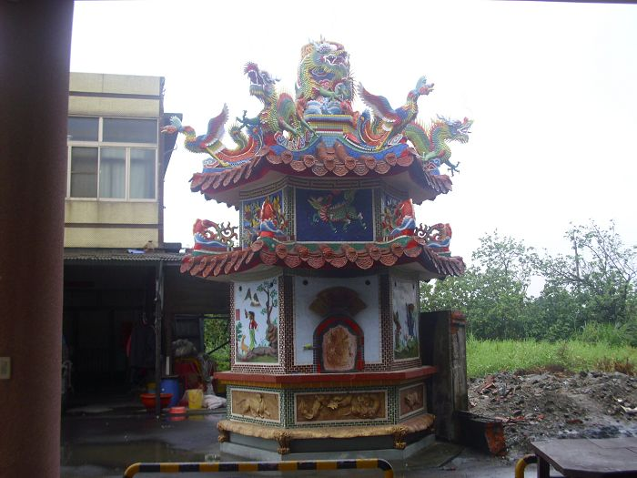
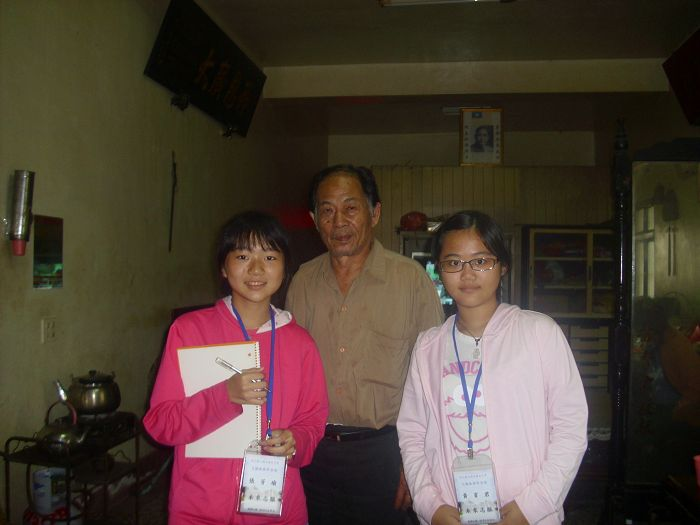

創立時間：民國74年 (1985年)
供奉神明：五府千歲 以及 三太子
創辦單位：財團法人
協辦村長：黃庭來
五府千歲的由來 (截自網路)
唐武德五年（622年），李、池、吳、朱、范五兄弟奉命領兵平定廣州，路過九江時又智擒叛賊輔公佑，回京之後，唐高祖嘉許其功勞，賞賜奴婢。但是五兄弟生性仁慈，不但使百名奴婢回歸故里，又贈送金銀，從此五兄弟的仁慈以及豐功偉績傳遍各地。
五府千歲在世時有功於國家，有德於百姓，升化之後又庇祐先民，由中國來到台灣。經過三百多年來人民
的辛勤開發與王爺公的庇護，已經使原本荒蕪的土地成為後來的蓬萊仙島。自五府千歲稱神至二十一世紀的今天，已經有一千三百多年，祂的神威靈感，深入每一個
人的心靈。奉著玉帝的旨令，五府千歲擁坐王船，代天巡狩，驅瘟除疫，在祂神威廣大之下，台灣的瘟疫已經消失無蹤。
據1960年所作的調查分析，全臺宮廟所供奉之主神共有二百四十七種之多，其中具有廿座以上的寺廟者有廿九種，超過一百座以上的有九種神明，最多的是王爺，共有七百一十七座，足見王爺信仰的普遍。
在臺閩有許多的「王爺廟」，這些廟裏的王爺照例會冠上一個姓，稱為「某府王爺」或「某府千歲」，俗說共有三百六十王爺，共一百三十二姓。假使三個王爺或五個王爺合祀在一起，則稱為「三府王爺」、「五府千歲」等。供奉王爺的廟亦稱「代天府」，王爺出巡則稱為「代天巡狩」。
聯絡方式 :
地理位置 :

地址 :
507彰化縣線西鄉溝內路114號
電話 :
04-758-0137

石獅子是台灣寺廟中最常見的，具有避邪作用。
|

護國佑民，為興安宮主要匾額。 |

繽紛精緻的火爐雕刻，令人嘆為觀止。
|

我們可愛的兩個隊員與興安宮廟公的合照。 |
<--回溝內村首頁 |